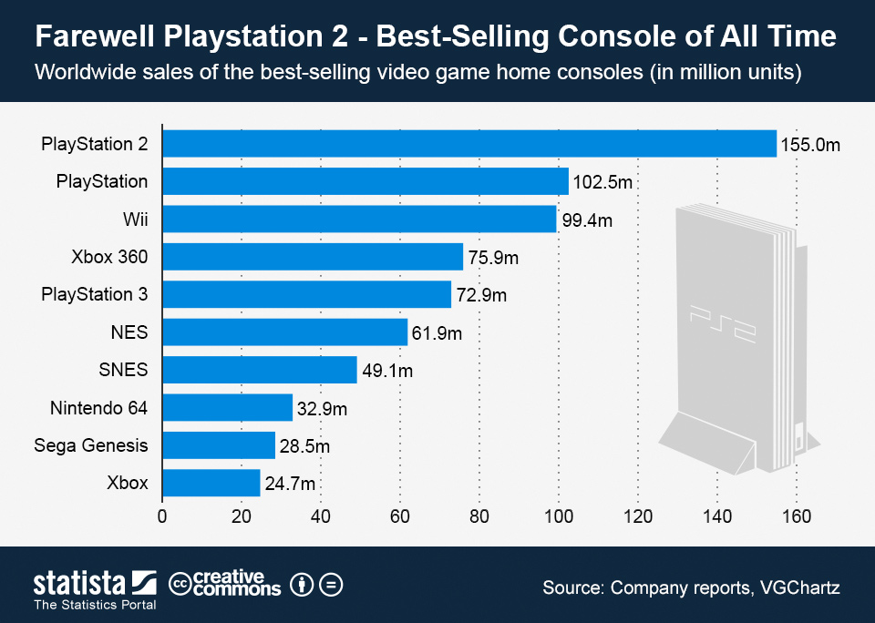

"Borba za prijestolje"
Šestu generaciju konzola, znanu i kao era 128-bita, započeo je Segin Dreamcast, kojemu su se poslije pridružili Playstation 2, Nintendo GameCube i novo lice na tržištu igraćih konzola, Microsoft sa svojim Xbox-om.
Dreamcast (1998.)
Sega Dreamcast je prva 128-bitna konzola na tržitu, te je ujedno Sega ovom konzolom započela šestu generaciju igraćih konzola.

Zbog niske i pristupačne cijene, Dreamcast se dobro prodaje u Americi, no dolaskom Sony-evog Playstation-a 2 prodaja znatno pada.
Sega je pokušala smanjenjem cijene podići broj prodaje, no nije uspjela.
Proizvodnja je zaustavljena 2001.
Playstatin 2 (PS2) (2000.)
Playstation 2 je 128-bitna konzola koju je razvila kompanija Sony.
PS2 imao je mogućnost gledanja DVD sadržaja, te je bio kompatibilan sa PS1 igricama što je povećalo prodaju i zanimaciju za konzolu.

Playstation 2 je još danas najprodavanija konzola na svijetu, sa prodanih 155 miliona konzola i skoro 4000 igara napravljenih te 1.5 milijardi primjeraka igara prodanih.

Microsoft Xbox (2000.)
Microsoft Xbox je prva konzola koju je Microsoft proizveo.
U usporedbi sa ostalim konzolama, Xbox je imao visoku grafičku snagu, desktop PC Intel Pentium III procesor, te je prva konzola koja je imala već ugrađeni tvrdi disk.

2002. Microsoft je uveo Xbox Live koji je omogućavao igranje, komunikaciju i skidanje sadržaja preko interneta.
Dok je u prodaji, Xbox pobjedio Dreamcast i GameCube, bio je daleko iza PS2.
Nintendo GameCube (2001.)
Nintendo GameCube je prva Nintendova konzola koja je koristila optičke diskove kao osnovni medij za pohranu igara.

GameCube nikad nije bio smatran lošom konzolom nego nije pokazao ništa "posebno" u usporedbi sa kompeticijom.